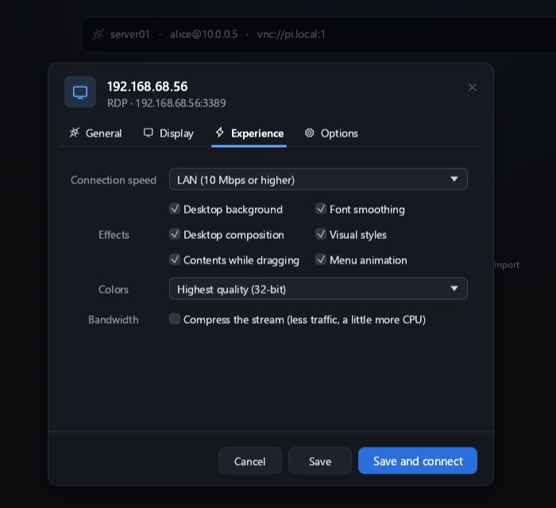
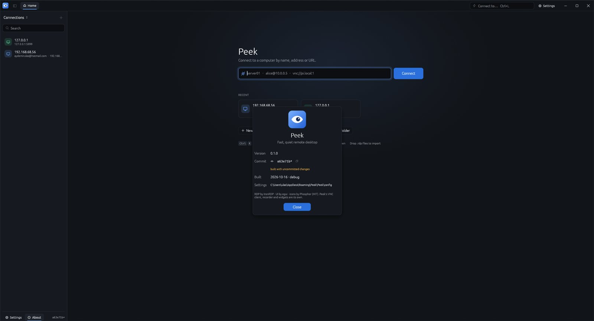

<title>Peek Build Log</title>
<meta name="claude:viewport-fit-sides" content="cover">
<link rel="preconnect" href="https://fonts.googleapis.com">
<link rel="stylesheet" href="https://fonts.googleapis.com/css2?family=Familjen+Grotesk:wght@500;700&family=IBM+Plex+Sans:wght@400;500;600&family=IBM+Plex+Mono:wght@400;500&display=swap">
<style>
/* Layout: one reading column; status strip up top, milestone rail, then reference sections and a dated log. */
:root{
  --bg:#f3f5f7; --surface:#ffffff; --fg:#17202b; --muted:#5a6878; --line:#d9dfe6;
  --accent:#2a6fdb; --accent-soft:#e3edfc;
  --ok:#1d8a5b; --ok-soft:#dcf2e7; --warn:#b26a00; --warn-soft:#fbefd9; --idle:#7b8794; --idle-soft:#eceff2;
  --f-display:"Familjen Grotesk",ui-sans-serif,system-ui,sans-serif;
  --f-body:"IBM Plex Sans",ui-sans-serif,system-ui,sans-serif;
  --f-mono:"IBM Plex Mono",ui-monospace,Consolas,monospace;
}
@media (prefers-color-scheme: dark){:root:not([data-theme="light"]){
  --bg:#0f141a; --surface:#161d26; --fg:#e4e9ef; --muted:#93a1b1; --line:#26313d;
  --accent:#6aa4ff; --accent-soft:#1a2a44;
  --ok:#4cc38a; --ok-soft:#14301f; --warn:#f0b04a; --warn-soft:#352711; --idle:#8795a5; --idle-soft:#1d252f; color-scheme:dark}}
:root[data-theme="dark"]{
  --bg:#0f141a; --surface:#161d26; --fg:#e4e9ef; --muted:#93a1b1; --line:#26313d;
  --accent:#6aa4ff; --accent-soft:#1a2a44;
  --ok:#4cc38a; --ok-soft:#14301f; --warn:#f0b04a; --warn-soft:#352711; --idle:#8795a5; --idle-soft:#1d252f; color-scheme:dark}
*{box-sizing:border-box}
body{background:var(--bg);color:var(--fg);font:15px/1.6 var(--f-body);
  padding-left:max(16px,env(safe-area-inset-left,0px));padding-right:max(16px,env(safe-area-inset-right,0px));padding-block:40px 80px}
main{max-width:920px;margin:0 auto;display:flex;flex-direction:column;gap:48px}
h1,h2,h3{font-family:var(--f-display);text-wrap:balance;margin:0;line-height:1.15}
h1{font-size:clamp(34px,6vw,52px);letter-spacing:-.02em}
h2{font-size:24px;letter-spacing:-.01em}
h3{font-size:16px}
p{margin:0;max-width:68ch}
code,.mono{font-family:var(--f-mono);font-size:.88em}
.eyebrow{font:500 12px var(--f-mono);letter-spacing:.08em;text-transform:uppercase;color:var(--muted)}
section{display:flex;flex-direction:column;gap:16px}
header{display:flex;flex-direction:column;gap:14px}
.lede{font-size:18px;color:var(--muted);max-width:60ch}
.strip{display:grid;grid-template-columns:repeat(auto-fit,minmax(160px,1fr));gap:1px;background:var(--line);border:1px solid var(--line);border-radius:10px;overflow:hidden}
.strip div{background:var(--surface);padding:14px 16px;display:flex;flex-direction:column;gap:2px}
.strip b{font:600 22px var(--f-display);font-variant-numeric:tabular-nums}
.strip span{font-size:12px;color:var(--muted)}
.bar{height:6px;border-radius:3px;background:var(--idle-soft);overflow:hidden}
.bar i{display:block;height:100%;background:var(--accent)}
.ms{display:flex;flex-direction:column;border-top:1px solid var(--line)}
.ms details{border-bottom:1px solid var(--line)}
.ms summary{list-style:none;cursor:pointer;display:grid;grid-template-columns:44px 1fr auto;gap:12px;align-items:center;padding:14px 4px}
.ms summary::-webkit-details-marker{display:none}
.ms summary:focus-visible{outline:2px solid var(--accent);outline-offset:2px}
.ms .id{font:500 13px var(--f-mono);color:var(--muted)}
.ms .t{font-weight:600}
.ms .body{padding:0 4px 18px 60px;display:flex;flex-direction:column;gap:10px}
.ms ul{margin:0;padding-left:18px;display:flex;flex-direction:column;gap:4px}
.ms li.done{color:var(--muted)}
.ms li.done::marker{content:"✓  ";color:var(--ok)}
.pill{font:500 12px var(--f-mono);padding:3px 9px;border-radius:99px;white-space:nowrap}
.pill.done{background:var(--ok-soft);color:var(--ok)}
.pill.active{background:var(--warn-soft);color:var(--warn)}
.pill.todo{background:var(--idle-soft);color:var(--idle)}
.grid2{display:grid;grid-template-columns:repeat(auto-fit,minmax(260px,1fr));gap:16px}
.card{background:var(--surface);border:1px solid var(--line);border-radius:10px;padding:18px;display:flex;flex-direction:column;gap:8px;min-width:0}
.card ul{margin:0;padding-left:18px;color:var(--muted);display:flex;flex-direction:column;gap:3px}
.card ul b{color:var(--fg);font-weight:500}
.tag{font:500 11px var(--f-mono);color:var(--accent);background:var(--accent-soft);padding:2px 7px;border-radius:4px;align-self:flex-start}
.diagram{overflow-x:auto;background:var(--surface);border:1px solid var(--line);border-radius:10px;padding:16px}
.diagram svg{display:block;min-width:640px;width:100%;height:auto}
.diagram text{font-family:var(--f-mono);font-size:12px;fill:var(--fg)}
.diagram .sub{fill:var(--muted);font-size:10.5px}
.diagram rect{fill:var(--surface);stroke:var(--line);stroke-width:1.2}
.diagram rect.hl{fill:var(--accent-soft);stroke:var(--accent)}
.diagram path{stroke:var(--muted);stroke-width:1.2;fill:none}
table{border-collapse:collapse;width:100%;font-size:14px}
.tw{overflow-x:auto}
th,td{text-align:left;padding:8px 10px;border-bottom:1px solid var(--line);vertical-align:top}
th{font:500 12px var(--f-mono);color:var(--muted);text-transform:uppercase;letter-spacing:.06em}
.shots{display:grid;grid-template-columns:repeat(auto-fit,minmax(300px,1fr));gap:16px}
.shots figure{margin:0;display:flex;flex-direction:column;gap:8px;min-width:0}
.shots img{display:block;width:100%;height:auto;border-radius:8px;border:1px solid var(--line)}
.shots figcaption{font-size:13px;color:var(--muted)}
.log{display:flex;flex-direction:column;gap:0;border-left:2px solid var(--line);margin-left:6px}
.log article{position:relative;padding:0 0 22px 22px;display:flex;flex-direction:column;gap:6px}
.log article::before{content:"";position:absolute;left:-7px;top:6px;width:12px;height:12px;border-radius:50%;background:var(--surface);border:2px solid var(--accent)}
.log time{font:500 12px var(--f-mono);color:var(--muted)}
.log ul{margin:0;padding-left:18px;display:flex;flex-direction:column;gap:3px}
@media (prefers-reduced-motion:no-preference){.bar i{transition:width .6s ease}}
@media (max-width:520px){.ms .body{padding-left:4px}.ms summary{grid-template-columns:36px 1fr}.ms summary .pill{grid-column:2;justify-self:start}}
</style>

<main>
<header>
  <span class="eyebrow">Remote desktop client · Rust + egui · local repo E:\source\private\peek</span>
  <h1>Peek</h1>
  <p class="lede">A fast, quiet remote desktop client. RDP first, VNC second, SSH later. The window stays out of the way until you need it.</p>
  <div class="strip" id="strip"></div>
  <div class="bar" aria-hidden="true"><i id="barfill" style="width:0"></i></div>
</header>

<section>
  <span class="eyebrow">Latest build · real screenshots</span>
  <h2>What it looks like now</h2>
  <div class="shots">
    <figure><figcaption>Live VNC session against the bundled test server. The floating toolbar appears at the top edge; the red dot is the server drawing where Peek's pointer is.</figcaption></figure>
    <figure><figcaption>Home with Peek's own title bar: logo, tabs, quick connect, Settings and window buttons. Sidebar footer shows Settings, About and the build commit.</figcaption></figure>
    <figure><figcaption>Connection editor, Experience tab: speed presets and the six visual effects from mstsc, colour depth and stream compression.</figcaption></figure>
    <figure><figcaption>About: version, commit (copyable, flagged when built with uncommitted changes), build date and profile.</figcaption></figure>
  </div>
</section>

<section>
  <span class="eyebrow">Milestones</span>
  <h2>Roadmap</h2>
  <div class="ms" id="milestones"></div>
</section>

<section>
  <span class="eyebrow">How it fits together</span>
  <h2>Architecture</h2>
  <p>Each protocol backend runs on its own Tokio task and writes decoded pixels into a shared framebuffer, marking dirty rectangles. The UI thread only uploads the dirty rectangles to the GPU texture each frame, so a blinking cursor costs a few hundred bytes of upload, not a full 4K frame. The recorder reads the same dirty-rect stream, which keeps recordings small and lossless.</p>
  <div class="diagram">
    <svg viewBox="0 0 760 300" role="img" aria-label="Architecture: protocol backends write to a shared framebuffer; the egui UI and the recorder read dirty rectangles from it; input flows back from UI to backends.">
      <rect x="20" y="30" width="170" height="54" rx="8"/><text x="34" y="54">peek-rdp</text><text class="sub" x="34" y="72">IronRDP · TLS · CredSSP</text>
      <rect x="20" y="104" width="170" height="54" rx="8"/><text x="34" y="128">peek-vnc</text><text class="sub" x="34" y="146">own RFB 3.8 client</text>
      <rect x="20" y="178" width="170" height="54" rx="8"/><text x="34" y="202">peek-ssh (later)</text><text class="sub" x="34" y="220">russh · terminal</text>
      <rect class="hl" x="290" y="92" width="190" height="78" rx="8"/><text x="306" y="118">peek-core</text><text class="sub" x="306" y="136">Framebuffer + dirty rects</text><text class="sub" x="306" y="152">Session trait · events · input</text>
      <rect x="570" y="30" width="170" height="54" rx="8"/><text x="584" y="54">peek (egui app)</text><text class="sub" x="584" y="72">partial texture upload</text>
      <rect x="570" y="120" width="170" height="54" rx="8"/><text x="584" y="144">peek-record</text><text class="sub" x="584" y="162">.peekrec · MP4 export</text>
      <rect x="570" y="210" width="170" height="54" rx="8"/><text x="584" y="234">peek-store</text><text class="sub" x="584" y="252">profiles · OS keyring</text>
      <path d="M190 57 C240 57 240 115 290 115"/><path d="M190 131 L290 131"/><path d="M190 205 C240 205 240 150 290 150"/>
      <path d="M480 115 C525 115 525 57 570 57"/><path d="M480 140 L570 147"/>
      <path d="M570 237 C520 237 520 165 480 160" stroke-dasharray="4 4"/>
      <text class="sub" x="210" y="280">pixels in →</text><text class="sub" x="500" y="280">← input, clipboard, resize out</text>
    </svg>
  </div>
</section>

<section>
  <span class="eyebrow">Scope</span>
  <h2>What Peek will do</h2>
  <div class="grid2">
    <div class="card"><span class="tag">RDP · main</span><h3>Windows hosts, done properly</h3><ul>
      <li><b>Security:</b> TLS, NLA/CredSSP, certificate pinning prompt</li>
      <li><b>Graphics:</b> bitmap, RemoteFX, EGFX/H.264 where IronRDP supports it</li>
      <li><b>Dynamic resize</b> via the display-control channel</li>
      <li><b>Clipboard</b> (text, then files), audio out, Ctrl+Alt+Del</li>
      <li><b>.rdp import</b>, gateway support later</li>
    </ul></div>
    <div class="card"><span class="tag">VNC</span><h3>Everything else with a screen</h3><ul>
      <li><b>RFB 3.3 / 3.7 / 3.8</b>, None and VNC auth</li>
      <li><b>Encodings:</b> Raw, CopyRect, RRE, Hextile, ZRLE, Tight</li>
      <li><b>Pseudo:</b> DesktopSize, ExtendedDesktopSize, Cursor</li>
      <li><b>Clipboard</b> both ways, view-only mode</li>
      <li>VeNCrypt / Apple ARD auth later</li>
    </ul></div>
    <div class="card"><span class="tag">Experience</span><h3>Unobtrusive by default</h3><ul>
      <li><b>Quick connect bar</b> that parses <code>rdp://user@host:port</code></li>
      <li><b>Command palette</b> (Ctrl+K) for every action</li>
      <li><b>Fullscreen</b> with a slim edge toolbar that hides itself</li>
      <li><b>Tabs + live thumbnail overview</b> of all sessions</li>
      <li><b>Fit / 1:1 / smart scaling</b>, latency and FPS overlay</li>
    </ul></div>
    <div class="card"><span class="tag">Extras</span><h3>Ideas beyond a basic client</h3><ul>
      <li><b>Session recording</b> in a lossless dirty-rect format, built-in player, MP4 export</li>
      <li><b>Credential vault</b> in the OS keyring, nothing in plain files</li>
      <li><b>Wake-on-LAN</b> before connect, auto-reconnect with backoff</li>
      <li><b>Screenshot to clipboard</b>, keystroke macros</li>
      <li><b>SSH terminal</b> tab as a third protocol</li>
    </ul></div>
  </div>
</section>

<section>
  <span class="eyebrow">Keeping the disk safe</span>
  <h2>Build hygiene</h2>
  <div class="tw"><table>
    <thead><tr><th>Measure</th><th>Effect</th></tr></thead>
    <tbody>
      <tr><td>Dependencies built at <code>opt-level=2</code>, no debug info</td><td>Fast app in dev builds, much smaller <code>target/</code></td></tr>
      <tr><td>Own crates use <code>debug="line-tables-only"</code> + incremental</td><td>Readable backtraces, quick rebuilds, small incremental cache</td></tr>
      <tr><td><code>scripts/hygiene.ps1</code></td><td>Prunes stale incremental sessions and old artifacts; runs <code>cargo clean</code> if <code>target/</code> passes a size cap (default 12 GB)</td></tr>
      <tr><td>One shared <code>target/</code> for the workspace</td><td>Dependencies compiled once for all crates</td></tr>
      <tr><td><code>cargo check</code> for iteration, full builds only to verify</td><td>Fewer linked binaries piling up</td></tr>
    </tbody>
  </table></div>
</section>

<section>
  <span class="eyebrow">Newest first</span>
  <h2>Progress log</h2>
  <div class="log" id="log"></div>
</section>
</main>

<script>
// status: done | active | todo ; items: [text, done?]
const MILESTONES = [
  {id:"M0", t:"Foundation", s:"done", items:[
    ["Git repo, Cargo workspace, crate layout",1],["Build profiles and disk hygiene script",1],["peek-core: framebuffer, dirty rects, session contract",1]]},
  {id:"M1", t:"App shell", s:"done", items:[
    ["eframe window, theme, sidebar connection library",1],["Quick connect bar with URL parsing",1],["Tabs, session viewport with partial texture upload",1],["Settings and profile persistence",1],["Sign-in prompt, keychain storage",1],["Icon font (Phosphor)",1]]},
  {id:"M2", t:"VNC backend", s:"done", items:[
    ["Handshake 3.3/3.7/3.8, None + VNC auth",1],["Raw, CopyRect, RRE, Hextile, ZRLE",1],["Tight encoding with JPEG",1],["Cursor and DesktopSize pseudo-encodings",1],["Keyboard, mouse, clipboard",1],["End-to-end test against the bundled test server",1]]},
  {id:"M3", t:"RDP backend", s:"active", items:[
    ["Connect with TLS + NLA via IronRDP",1],["Bitmap / RemoteFX decode, region-only blits",1],["Keyboard (scancodes), mouse, wheel",1],["Dynamic resize (display control)",1],["Audio playback",1],["Text clipboard (CLIPRDR)",1],["Certificate trust prompt (TOFU)",1],["Tested against a live Windows host",0],["File clipboard, RD Gateway, H.264",0]]},
  {id:"M4", t:"Performance pass", s:"active", items:[
    ["Repaint only on change (backend wakes the UI)",1],["Stats overlay: updates/s, bandwidth",1],["DX12 + power-saving GPU by default",1],["Release build measured: 24.7 MB binary",1],["Idle memory is 203 MB: investigate",0],["Benchmarks for decoders",0]]},
  {id:"M5", t:"Session recording", s:"done", items:[
    ["Lossless .peekrec writer (zstd dirty rects, crash-safe segments)",1],["Built-in player with seek and speed",1],["MP4 export (H.264)",1]]},
  {id:"M6", t:"Vault and library", s:"active", items:[
    ["OS keyring credentials",1],["Groups, favorites, search, recent",1],["Certificate trust on first use",1],[".rdp file import",1]]},
  {id:"M7", t:"Power features", s:"active", items:[
    ["Command palette (Ctrl+K)",1],["Floating session toolbar",1],["Live thumbnail overview",1],["Wake-on-LAN",1],["Screenshot to clipboard",1],["Auto-reconnect with backoff",1],["Keyboard grab (Win key, Alt+Tab), needs a manual test",1],["SSH terminal tab",0]]},
  {id:"M8", t:"Hardening and packaging", s:"active", items:[
    ["Randomized no-panic test over all VNC decoders",1],["Bounded allocations for hostile servers",1],["Release profile",1],["Installer",0]]},
];
const LOG = [
  {d:"2026-10-16", h:"RDP audio confirmed working", items:["The log showed the server never opened the sound channel: Windows starts sound output only after the client announces the device redirection channel (rdpdr). Peek now announces it, with no devices, whenever audio is on","Confirmed on the Windows host: remote audio plays in Peek (release d2ac60f21)"]},
  {d:"2026-10-16", h:"Fix: no sound from the remote computer", items:["Reported: no audio over RDP","IronRDP's sound client answers the server's format list in random (hash-set) order, yet hands the server's index into that list to a handler that only knows its own list, so sound could be decoded with the wrong format and come out silent. Any unexpected message (such as the older WaveInfo + Wave pair) also ended sound for the session","Peek now runs its own rdpsnd channel: formats in the server's order, every wave decoded with the format it refers to, both wave styles, unknown messages ignored, any PCM rate","Peek now writes %LOCALAPPDATA%\\Peek\\logs\\peek.log (previous run in peek.old.log), with a Log folder button in Settings. The audio path logs formats, the first wave, the output device and decode failures","Installed as release 6c0b1e080; needs a check against the Windows host"]},
  {d:"2026-10-16", h:"Audio: live sessions, recordings, MP4", items:["New peek-audio engine replaces IronRDP's native backend, which opened the device at the server's rate (your device runs at 48 kHz, the server sends 44.1 kHz) and could block its audio callback for 4 s. Peek converts to the device's own format, never blocks, starts after a 60 ms cushion and catches up after network stalls","RDP sound: Opus 48 kHz below LAN speeds (about 64 kbit/s instead of 1.4 Mbit/s of PCM), PCM 48/44.1 kHz on LAN; remote volume honoured; a missing sound device no longer matters","Session toolbar: mute and volume. Tabs show a speaker while a session plays sound; click it to mute, like a browser tab","Recordings now include sound as 20 ms Opus packets at 96 kbit/s (PCM would be about 700 MB per hour); the player plays it at 1x with its own volume","MP4 export adds an AAC-LC track (FDK AAC, built from source) kept in step with the picture; the test decodes the exported track back to the recorded tone","Not possible on IronRDP today: \"play on the remote computer\" (needs a logon flag IronRDP does not expose) and microphone redirection","57 tests passing; release binary 28.5 MB"]},
  {d:"2026-10-16", h:"MP4 export of recordings", items:["Export MP4 in the player (and in the command palette): H.264 via OpenH264, built from source into Peek, no DLLs or ffmpeg needed","Only moments where the screen or pointer changed are encoded, each frame lasting until the next change (repeated at least every 2 s so players can seek). Idle stretches cost nothing","Pointer drawn into the video; screen-content encoder mode; keyframe every 10 s; bitrate picked from the frame size","Checked on your own RDP recording: 2560 × 1440, 3 s, 41 frames, 39 KB, exported in 0.57 s; all 41 frames decode again","Runs in the background with progress and Cancel; when done, Open or Show in folder. Command line: cargo run -p peek-record --features mp4 --example export","Release binary 27.5 MB (+0.8 MB for the encoder); 49 tests passing"]},
  {d:"2026-10-16", h:"Experience settings, sharper text, tabbed editor", items:["RDP Experience like mstsc: connection speed presets (LAN to modem) fill in desktop background, font smoothing, desktop composition, window contents while dragging, menu animation and visual styles, sent as Client Info performance flags. Plus colour depth (32/24/16/15), XCRUSH stream compression and an optional auto-reconnect","Not possible on IronRDP today: persistent bitmap caching and automatic connection-quality detection (it always declares LAN)",".rdp import now reads the Experience keys, session bpp, compression and autoreconnection enabled","Text: egui's thin Ubuntu Light replaced by Segoe UI (and Cascadia Mono) read from the Windows font folder, Segoe UI Semibold for headings, hinting on, sub-pixel binning off, small text raised to about 12 px","Connection editor rebuilt as a dimmed modal with tabs: General, Display, Experience (RDP), Options. Segmented RDP/VNC switch, group picker, fixed height so tabs do not jump","47 tests passing; installed as release 069b93e1c"]},
  {d:"2026-10-16", h:"Fix: keyboard input to RDP sessions", items:["Reported: keys did not reach the remote computer over RDP","Cause: with keyboard grab on, RDP sessions took keys only from the low-level hook and ignored everything egui delivered. The hook skips injected input (remote-control tools, on-screen keyboards, auto-type), and Windows silently removes a hook that answers too slowly, so typing could go nowhere","Fix: keys that reach egui were not taken by the hook (swallowed keys never get that far), so they are now always forwarded. No double sends","Sessions also take keyboard focus when they connect and when their tab is shown, so there is no need to click into the picture first","Installed as release c890832d2 with peek-release; needs a check against the Windows host"]},
  {d:"2026-10-16", h:"Own title bar, About box, release script", items:["The window has no native frame any more: Peek's title bar carries the logo, tabs, quick connect, a labelled Settings button and Windows-style minimize / maximize / close. Empty space drags the window with normal snapping; double-click maximizes; edges resize","Logo drawn in code (an eye peeking from a blue tile), used for the taskbar icon, title bar and About","Settings is now easy to find: title bar, sidebar footer, Ctrl+, and the command palette","build.rs stamps the commit (marked dirty for uncommitted changes), build date and profile. Shown in About (copyable), the sidebar footer and peek --version","peek-release in ~/.local/bin (on PATH): release build, target/ trim, closes running instances politely, installs peek.exe (keeps peek.old.exe), starts it. Verified end to end: 35 s incremental release build of 49deadfa8","43 tests passing"]},
  {d:"2026-10-16", h:"Interface pass and screen size setting", items:["The text cursor over the connection list came from egui making every label selectable text. Labels are no longer selectable, and anything clickable shows a hand cursor","Connection rows are custom-drawn and full width: protocol tile, live status dot, name and user · host cut to fit, and on hover a favorite star, a ⋯ menu and a connect button. Arrow keys and Enter work from the search box","Collapsible sections with an animated chevron and counts; framed search fields with focus ring and clear button; tabs with an animated underline and close on hover","Home: accent glow, large connect field, Recent as cards that lift on hover, key-cap shortcut hints. Softer shadows, floating scrollbars, slightly larger text","New Screen size setting per connection: Match window, 12 presets or custom. 1920 × 1080 is the default, and .rdp import takes desktopwidth/desktopheight","Safety fix found on the way: an unreadable library file used to fall back to empty and could then be overwritten. A copy is now kept next to it","42 tests passing"]},
  {d:"2026-10-16", h:"Clipboard in Peek's own fields", items:["Ctrl+V did nothing in Peek's text fields: eframe was built without its clipboard feature, so paste read an empty in-app buffer. Enabled; copying out of Peek works now too","Inside a session, Ctrl+V with an image on the clipboard was swallowed instead of reaching the remote machine. The real key is now replayed, including Shift+Insert"]},
  {d:"2026-10-16", h:"Microsoft account sign-in", items:["MicrosoftAccount\\you@hotmail.com used to fail before connecting: the auth library rejects a domain paired with an account that contains @","Such accounts are now sent as a UPN (you@hotmail.com), the form Windows accepts at its own logon screen. DOMAIN\\user and user@domain work as before","Re-entering credentials no longer drops a connection's separate Domain field","New test runs every accepted user name format through the auth library itself; 41 tests passing"]},
  {d:"2026-10-16", h:"Hardening, import, release build", items:["The new randomized decoder test found a real issue: garbage RRE or ZRLE data could make Peek try to allocate gigabytes. Rectangles, counts, payloads and inflated sizes are now bounded","Imports mstsc .rdp files (UTF-16): drop them on the window, use the palette, or run peek file.rdp","Release binary: 24.7 MB, 147 s build. Idle memory is 203 MB, which is noted for investigation","38 tests passing; target/ at 5.4 GB including the release build, under the 12 GB cap"]},
  {d:"2026-10-16", h:"Clipboard, keyboard grab, reconnect", items:["RDP text clipboard over CLIPRDR, using the same path as VNC; local text is offered before every paste","Keyboard grab via a low-level hook, only while a connected session has focus. RDP gets every key as a real scancode","Auto-reconnect at 1, 2, 4, 8 and 16 s. Tested by killing and restarting the server: dropped in 11 ms, back on the second retry","That test caught a crash: the stats counters underflowed after reconnect. Fixed","DX12 and the power-saving GPU are now the defaults on Windows, which also silences third-party Vulkan overlay layers"]},
  {d:"2026-10-16", h:"The app runs", items:["egui 0.37 shell: tabs, connection sidebar, home screen with recent connections and live thumbnails","Session view uploads only damaged rectangles to the GPU texture and draws the remote cursor locally","Each RDP session gets its own thread and runtime (IronRDP futures are not Send, and RemoteFX decoding is heavy)","Command palette, connection editor, settings, certificate change warning, toasts","Bundled test VNC server: connected, decoded ZRLE, pointer round-trip confirmed on screen","Password prompt path confirmed against the server with VNC auth","35 unit tests passing"]},
  {d:"2026-10-16", h:"Disk hygiene verified", items:["Fixed a bug in hygiene.ps1 (a PowerShell name clash made it skip everything)","Aggressive prune took target/ from 3.9 GB to 2.3 GB, and the project still builds","scripts/dev.ps1 wraps cargo and checks target/ after every command"]},
  {d:"2026-10-16", h:"Recording format", items:[".peekrec stores only changed regions with timestamps, in independent zstd segments","A recording cut off mid-write still opens up to its last complete segment (tested)","Keyframe every 10 s for fast seeking"]},
  {d:"2026-10-16", h:"RDP backend compiles", items:["Wrote our own session driver on IronRDP 0.17 instead of using ironrdp-client, which copies the full desktop on every update","Only the updated region is copied into the framebuffer","Remote cursor arrives as a bitmap and is drawn locally, so the pointer never lags","Server certificate SHA-256 fingerprint is reported for a later trust prompt","Not yet tested against a real Windows host"]},
  {d:"2026-10-16", h:"VNC backend done", items:["In-house RFB client: 3.3, 3.7 and 3.8 with None and VNC auth","Decoders: Raw, CopyRect, RRE, Hextile, ZRLE, Tight with JPEG; pure functions over byte slices so they can be fuzzed","DES auth checked against the FIPS test vector","13 unit tests, all passing"]},
  {d:"2026-10-16", h:"Foundation committed", items:["Workspace, build profiles, hygiene script","peek-core: framebuffer with dirty rectangles, scancode and keysym tables, address parser","14 unit tests, all passing"]},
  {d:"2026-10-16", h:"Plan published", items:["Settled crate layout and milestones","Checked toolchain: Rust 1.98.1, cmake and nasm present","Chose IronRDP 0.17 for RDP and an in-house RFB client for VNC"]},
];

const label = {done:"done", active:"in progress", todo:"planned"};
const esc = s => s.replace(/[&<>]/g, c => ({"&":"&amp;","<":"&lt;",">":"&gt;"}[c]));
document.getElementById("milestones").innerHTML = MILESTONES.map(m => `
  <details ${m.s==="active"?"open":""}><summary><span class="id">${m.id}</span><span class="t">${esc(m.t)}</span><span class="pill ${m.s}">${label[m.s]}</span></summary>
  <div class="body"><ul>${m.items.map(([t,d])=>`<li class="${d?"done":""}">${esc(t)}</li>`).join("")}</ul></div></details>`).join("");
const all = MILESTONES.flatMap(m=>m.items), done = all.filter(i=>i[1]).length;
const active = MILESTONES.find(m=>m.s==="active");
document.getElementById("strip").innerHTML = `
  <div><b>${done} / ${all.length}</b><span>tasks done</span></div>
  <div><b>${MILESTONES.filter(m=>m.s==="done").length} / ${MILESTONES.length}</b><span>milestones done</span></div>
  <div><b>${active?active.id:"—"}</b><span>${active?esc(active.t):"nothing active"}</span></div>
  <div><b>${LOG[0].d.slice(5)}</b><span>last update</span></div>`;
document.getElementById("barfill").style.width = (100*done/all.length).toFixed(1)+"%";
document.getElementById("log").innerHTML = LOG.map(l => `<article><time>${l.d}</time><h3>${esc(l.h)}</h3><ul>${l.items.map(i=>`<li>${esc(i)}</li>`).join("")}</ul></article>`).join("");
</script>
